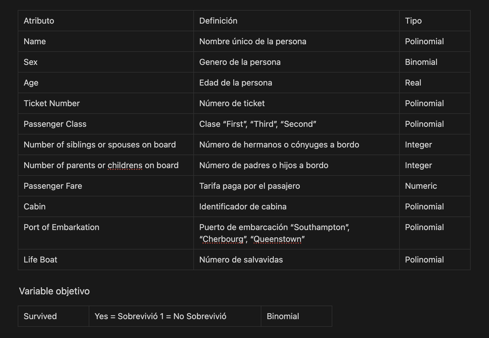

Contexto
El hundimiento del Titanic es uno de los eventos más conocidos en la historia de la navegación. En la noche del 14 al 15 de abril de 1912, el barco Titanic se hundió tras chocar con un iceberg en su viaje inaugural desde Southampton a Nueva York. Este trágico suceso resultó en la pérdida de más de 1,500 vidas de los pasajeros y la tripulación.
Titanic Dataset es un conjunto de datos que recopila información detallada sobre los pasajeros a bordo del Titanic. Esto incluye datos como la clase de boleto, edad, género, número de hermanos/cónyuges a bordo, número de padres/hijos a bordo, el puerto de embarque y, lo más importante, si el pasajero sobrevivió o no a la tragedia.
Este conjunto de datos se ha utilizado en numerosos análisis y proyectos de aprendizaje automático para predecir la supervivencia de los pasajeros en función de sus características personales. Además, ha servido como un caso de estudio clásico en la comunidad de ciencia de datos y aprendizaje automático debido a su relevancia histórica y la variedad de variables que ofrece.
Entendimiento del negocio
En este caso de estudio, nos enfocaremos en explorar y analizar los datos del Titanic para obtener información sobre los factores que contribuyeron a la supervivencia, o no, de los pasajeros. Nuestro objetivo es comprender mejor qué atributos o variables, como la clase de boleto, la edad, el género, el número de hermanos/cónyuges a bordo, el número de padres/hijos a bordo y el puerto de embarque, pueden haber influido en la probabilidad de supervivencia de los pasajeros.
Conocimiento de datos
Implementación RapidMiner
Se aplican dos modelos, uno con el algoritmo Decision Tree y otro con el algoritmo Naive Bayes. Ambos algoritmos son supervisados, es decir, se le brinda al algoritmo un conjunto de datos de entrenamiento, en este caso el 70% del dataset, y el algoritmo aprende de estos datos para luego poder predecir los resultados de un conjunto de datos de prueba. Tenemos dos bloques de Cross Validation, "CV DT" referido a Decision Tree y "CV NB" referido a Naive Bayes.
Preparación de datos
Lo primero que se hace es visualizar los datos del DataSet, como se puede observar hay atributos con Missing Values (Valores perdidos), ellos son la edad, identificador de cabina y bote salvavidas, próximamente se mostrará qué se hace con estos datos.
Se filtran los atributos, dejando fuera número de cabina, bote salvavidas y el número de ticket, esto porque son atributos que no tienen incidencia sobre la predicción que pueda llegar a tomar el algoritmo. Además se puede observar que en estos atributos los datos son alfanuméricos, lo que imposibilita más su comprensión, también evitamos los Missing Values que tienen el número de cabina y el bote salvavidas.
Seguidamente se selecciona al atributo nombre con el rol id, esto para …
Aplicación del modelo
Dentro de los bloques Cross Validation, se particiona el dataset de entrada en k subconjuntos del mismo tamaño de los k subconjuntos, se conserva un solo subconjunto como conjunto de datos de prueba (es decir, entrada del subproceso de prueba). Los subconjuntos restantes de k - 1 se utilizan como conjunto de datos de entrenamiento (es decir, entrada del subproceso de entrenamiento). El proceso de Cross Validation se repite k veces. Los k resultados de las iteraciones k se promedian (o se combinan de otra manera) para producir una sola estimación.
Aplicación Decision Tree
En el panel izquierdo, que se encuentra dedicado al entrenamiento, se utiliza el algoritmo Decision Tree, un algoritmo usado para problemas de clasificación, como es el caso, y regresión.
En el panel derecho, se aplica el modelo y se testea el performance que tuvo el modelo aplicado por cada k parte.
A continuación se detallan los parámetros dados al algoritmo. Los mismos fueron determinados a partir de prueba y error.
criterion: es el criterio en el que se seleccionarán los atributos para la división. En este caso se decidió por gain_ratio el cual ajusta la ganancia de información para cada atributo para permitir la amplitud y uniformidad de los valores del atributo.
maximal depth: Este parámetro se utiliza para restringir la profundidad del árbol de decisiones. En este caso se pone en 9.
confidence: Este parámetro especifica el nivel de confianza utilizado para el cálculo del error pesimista de la poda.
Aplicación Naive Bayes
Se aplica lo mismo que el modelo anterior, pero con la diferencia de que se utiliza el Naive Bayes. Este algoritmo es efectivo en problemas de clasificación. Se basa en el teorema de Bayes y es útil para modelar la probabilidad condicional de que un punto de datos pertenezca a una clase en función de sus características.
Resultados obtenidos
Decision Tree
Como se ve en la imagen, el modelo tiene una precisión de 80%, es decir, que el modelo es capaz de predecir con un 80% de precisión si un pasajero sobrevivió o no.
Naive Bayes
Naive Bayes lo sigue con una precisión de 76% aproximadamente.
Implementación Python
import pandas as pd
from sklearn.tree import DecisionTreeClassifier
from sklearn.model_selection import cross_val_score
from sklearn.metrics import accuracy_score
data = pd.read_csv('Titanic.csv', delimiter=';')
data = data[['Age', 'No of Parents or Children on Board', 'No of Siblings or Spouses on
Board',
'Passenger Fare', 'Port of Embarkation', 'Sex', 'Survived']]
data = pd.get_dummies(data, columns=['Port of Embarkation', 'Sex'], prefix='Class')
data['Age'].fillna(data['Age'].mean(), inplace=True)
X = data.drop('Survived', axis=1)
y = data['Survived']
model = DecisionTreeClassifier(criterion='gini', max_depth=9, min_samples_split=4)
scores = cross_val_score(model, X, y, cv=10)
print(scores)
model.fit(X, y)
y_pred = model.predict(X)
accuracy = accuracy_score(y, y_pred)
print("Precisión en Cross Validation:", scores.mean())
print("Precisión en todo el dataset:", accuracy)
Conclusión
En este proyecto de análisis de datos del Titanic, hemos explorado el conjunto de datos que recopila información detallada sobre los pasajeros del icónico barco. Nuestro objetivo ha sido comprender mejor los factores que contribuyeron a la supervivencia de los pasajeros en esta tragedia histórica. Hemos realizado un proceso de preprocesamiento de datos que incluyó la eliminación de atributos que no influyen significativamente en la predicción, así como la gestión de valores faltantes en algunos de los atributos clave, como la edad. Luego, implementamos un modelo utilizando el algoritmo Decision Tree y lo evaluamos utilizando Cross Validation. Esto nos permitió obtener una estimación de la precisión del modelo en la predicción de la supervivencia de los pasajeros. Los resultados obtenidos nos han proporcionado información valiosa sobre cómo ciertos atributos, como la clase de boleto, la edad y el género, pueden haber influido en la probabilidad de supervivencia de los pasajeros. Acerca de la precisión del modelo, se puede decir que es bastante buena, ya que el modelo ambos modelos utilizados dieron una precisión alta. Siendo Decision Tree el algoritmo de cabecera. Sin embargo, se puede mejorar realizando investigaciones acerca del contexto, conversando con expertos en el tema y agregando más atributos al dataset, como por ejemplo el estado de salud de los pasajeros, si tenían alguna enfermedad, etc.
Descarga de recursos
Titanic proceso de RapidMiner (Click para ir al enlace)
Titanic DataSet (Click para ir al enlace)
Titanic Python proceso (Click para ir al enlace)